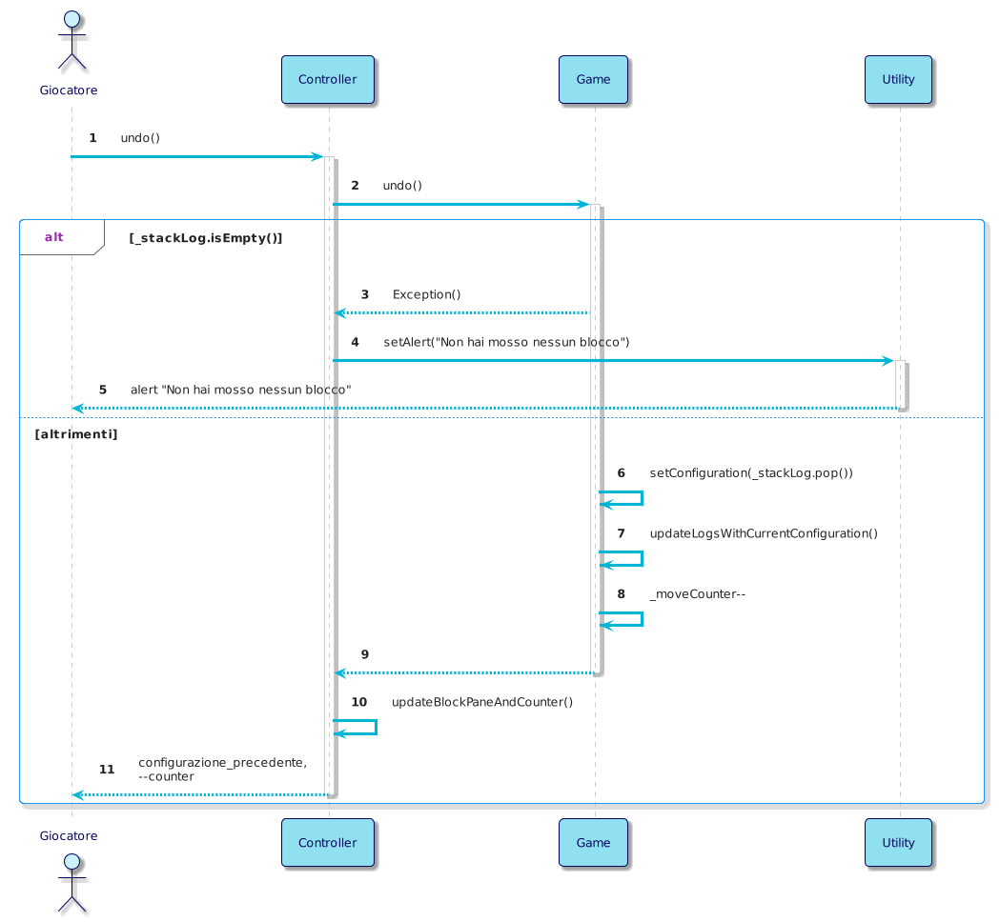

Manuale
Introduzione
L’applicazione Klotski permette di giocare all’omonimo gioco: un puzzle a blocchi scorrevoli nella quale l'obiettivo è spostare un blocco speciale in una posizione predefinita. La difficoltà sta proprio nello muovere ingegnosamente gli altri pezzi all’interno del piano di gioco per far strada a quello speciale, e riuscire a fargli raggiungere la posizione finale nel minor numero di mosse possibile.
Tecnologie utilizzate
| Nome | Versione | Descrizione |
|---|---|---|
| Java | 20 | Ambiente e linguaggio di programmazione utilizzato per sviluppare l’applicazione. |
| JavaFX | 20.0.1 | Piattaforma per lo sviluppo di applicazioni client, basata su Java. |
| JFoenix | 9.0.1 | Libreria Java open source che implementa Google Material Design utilizzando componenti Java. |
| Jackson | 2.12.3 | Libreria Java per la serializzazione di oggetti Java in oggetti JSON e viceversa. |
| JUnit | 5.9.1 | Framework per il testing automatico di classi Java. |
| SceneBuilder | 19.0.0 | Software per la costruzione di una GUI JavaFX tramite drag and drop. |
Descrizione del progetto e implementazione delle specifiche
Nelle prime fasi di sviluppo del progetto, si sono visionate, discusse e approfondite le specifiche, con l’idea di affrontare, così facendo, le fasi di progettazione e di sviluppo più linearmente possibile.
Dopo aver portato a termine la fase di definizione delle specifiche e di design (le quali deliverables sono allegate nelle sezioni successive) si è proceduto con lo sviluppo vero e proprio dell’applicazione.
L’idea principale, che è alla base della realizzazione delle funzionalità del software, è stata quella di utilizzare il concetto di “configurazione”, rappresentante l’insieme dei pezzi che compongono il puzzle e le loro posizioni in un determinato momento (o mossa).
Interfaccia grafica e spostamento dei blocchi
Per realizzare la GUI, si è fatto uso della libreria grafica di JavaFX. È stato utilizzato, inoltre, il software SceneBuilder per una disposizione più agevole degli elementi grafici, e per la successiva generazione del file fxml, che codifica l’interfaccia tramite il linguaggio di markup di JavaFX.
I blocchi sono stati implementati tramite l’estensione di un componente di JavaFX, così da poter gestire la logica dello spostamento degli stessi - evitando, per esempio, che si sovrapponessero, o facendo in modo che restassero nei limiti del piano di gioco - semplicemente prelevando le informazioni dagli attributi forniti direttamente dalla libreria.
A completare l’interfaccia, si sono aggiunti dei bottoni, presi dal set di componenti JFoenix. A ciascun bottone è stata associata una funzionalità. Le funzionalità sono state implementate tramite una logica triggerata da eventi scatenati dall’utente compiendo determinate azioni sulla GUI.
Possibilità di salvare lo stato corrente e di ripristinarlo
Questa funzionalità è strettamente collegata alle altre. Per memorizzare lo stato corrente, e permettere il suo ripristino una volta chiusa e riaperta l’applicazione, si è pensato di tenere traccia, in uno stack, delle configurazioni generate ogni volta dallo spostamento del singolo blocco. La memorizzazione di questo storico avviene su file JSON, che si aggiorna ad ogni mossa. Per gestire la scrittura e la lettura su file è stata utilizzata la libreria Jackson.
Scegliere fra diverse configurazioni di partenza
Ad alcuni bottoni è stata associata la funzionalità di cambio visualizzazione ad una prefissata configurazione. Le configurazioni iniziali, che si possono scegliere, sono memorizzate all’interno del codice. Da notare che il cambio di configurazione comporta un reset dello storico.
Resettare la partita
Tramite l’apposito bottone, è possibile resettare la partita, quindi anche lo storico, visualizzando la configurazione iniziale per quella partita.
Tornare indietro di una mossa
Tramite l’apposito bottone, è possibile tornare indietro di una mossa. Questa operazione è implementata tramite l’eliminazione dell’ultima configurazione dallo storico, e la visualizzazione della penultima.
Next best move
Tramite l’apposito bottone, è possibile visualizzare una configurazione che rappresenta la mossa migliore possibile che si può fare a partire dalla mossa precedente. La logica che permette di usufruire di questa funzionalità è implementata da un sistema esterno. La connessione fra il software e questo sistema esterno è stata creata tramite due classi di JavaFX: WebView, che “mappa” il contenuto di una pagina web, e WebEngine, che permette di modificare una pagina web tramite WebView. Con questa infrastruttura è stato possibile interrogare il sistema esterno, ed elaborare la sua risposta. La configurazione risultante viene memorizzata nello storico come mossa.
Counter delle mosse effettuate
E’ previsto il counter per il conteggio delle mosse di una partita. Il counter corrisponde alla dimensione dello storico, meno la configurazione iniziale. Di conseguenza segue questa logica per tutte le altre funzionalità.
Al termine dello sviluppo, si è svolto un refactoring del codice per permettere un testing efficiente e rigoroso, anche tramite JUnit (le deliverables relative al testing sono disponibili nelle sezioni successive).
Scaricare ed installare il software
Jar
Per scaricare il programma in formato .jar, cliccare sul seguente tasto "Download":
Una volta terminato il download del file zip, estrarne il contenuto in una locazione a piacere all’interno del proprio dispositivo. Si estrarranno due directory:
- klotski_files, nella quale sono contenuti i file necessari per il salvataggio delle partite e la richiesta della NBM. È stato scelto di allocarli esternamente poiché non era possibile renderizzarli ed utilizzarli all’interno del file jar.
- klotski_application, nella quale è contenuto il file klotski.jar.
Per avviare l’applicazione, fare doppio click su klotski.jar. L’esecuzione in questa modalità del programma è possibile su qualsiasi sistema operativo, previa installazione del JRE.
IDE
Nel caso ci siano problemi con la precedente modalità di installazione, si consiglia di clonare il repository
linkato in alto a destra, aprire il progetto così scaricato tramite IDE (ad esempio IntelliJ) ed eseguire il
main presente nel seguente percorso: src/main/java/com/klotski/app/Main.java
L’esecuzione è previa installazione della jdk (preferibilmente versione 20).
Come giocare
Per muovere un blocco, basterà semplicemente selezionarlo cliccandolo e muoverlo utilizzando le frecce
direzionali, o WASD.
Per cambiare configurazione, basterà cliccare uno dei bottoni numerati alla destra del puzzle.
Per richiedere le funzioni, basterà cliccare i relativi bottoni a sinistra del puzzle.
Design Patterns
GRASP
Creator
La classe Piece è stata progettata secondo il pattern creator. Configuration, infatti, istanzia e aggrega oggetti della classe Piece. Anche Configuration, a sua volta, è contenuta ed istanziata in Game.
Controller
La classe Controller è semplicemente ciò che dice di essere: un controller, ossia un oggetto che si occupa della comunicazione tra interfaccia grafica e sistema. Questa classe si occupa di recepire gli input forniti dall’utente attraverso la GUI, richiamare successivamente le funzioni implementate in altre classi che sopperiscono alla logica della richiesta, per poi ricevere i risultati e aggiornare l’interfaccia di conseguenza.
Low Coupling
Tutte le classi di questo software sono state progettate in modo da limitare il più possibile il coupling, cioè l’impatto che una modifica ad una classe potrebbe avere sull’intero progetto.
High Cohesion
Tutte le classi di questo software sono state progettate in modo da rappresentare il più possibile concetti atomici e separati.
Pure Fabrication
Ci siamo accorti, durante la fase di design, che sarebbe stata comoda una classe che gestisse tutta la logica dietro ad una partita di Klotski. Con questo scopo è stata "fabbricata" la classe Game.
GoF
Facade
La classe Controller funge anche da interfaccia per l'NBM_Script. In pratica è l'unica facciata che connette il sistema con gli altri attori esterni, e questo rispecchia il design pattern Facade.
Specifiche

- Scegliere configurazione iniziale
- Muovere i blocchi nelle posizioni consentite
- Utilizzare funzione di reset
- Utilizzare funzione di undo
- Richiedere "next best move"
- Visualizzare counter delle mosse effettuate
- Salvare lo stato corrente
- Ripristinare partita salvata
| Use Case 1 | |
|---|---|
| Nome dello Use Case | Scegliere configurazione iniziale |
| Attori | Giocatore |
| Descrizione | Il giocatore può selezionare una tra quattro configurazioni iniziali da cui partire con il gioco |
| Precondizioni | Nessuna mossa deve essere stata effettuata, oppure deve essere stato appena indotto un reset della partita |
| Scenario Principale | Viene impostata dal programma la disposizione iniziale dei blocchi scelta dal giocatore |
| Scenario Alternativo | La partita può iniziare con la configurazione fornita dal programma |
| Post-Condizioni | Resettare il counter delle mosse, salvare lo stato corrente, elaborare "next best move" |
| Note | Valutare se è sempre possibile determinare il "next best move" dalla condizione iniziale |
| Use Case 2 | |
|---|---|
| Nome dello Use Case | Muovere i blocchi nelle posizioni consentite |
| Attori | Giocatore |
| Descrizione | Il giocatore può muovere i blocchi in uno degli spazi liberi sufficientemente grandi |
| Precondizioni | Deve esistere una posizione consentita, ossia uno spazio libero |
| Scenario Principale | Il blocco selezionato viene spostato di una posizione nella direzione scelta dal giocatore |
| Scenario Alternativo | Il blocco selezionato non si muove |
| Post-Condizioni | Incrementare il counter delle mosse, salvare lo stato corrente, elaborare "next best move" |
| Note | - |
| Use Case 3 | |
|---|---|
| Nome dello Use Case | Utilizzare funzione di reset |
| Attori | Giocatore |
| Descrizione | Il giocatore può resettare la partita attraverso un tasto dedicato. |
| Precondizioni | - |
| Scenario Principale | In qualsiasi momento l giocatore può decidere di resettare la partita premendo il tasto "reset". I blocchi devono essere sistemati nella configurazione iniziale |
| Scenario Alternativo | Se il giocatore non ha ancora effettuato alcuna mossa, il reset non fa nulla |
| Post-Condizioni | Resettare il counter delle mosse, salvare lo stato corrente, elaborare "next best move" |
| Note | - |
| Use Case 4 | |
|---|---|
| Nome dello Use Case | Utilizzare funzione di undo |
| Attori | Giocatore |
| Descrizione | Il giocatore può scegliere di annullare una o più mosse, in ordine cronologico dalla più recente alla meno recente, fino alla situazione di partenza |
| Precondizioni | Deve essere stata eseguita almeno una mossa |
| Scenario Principale | La disposizione dei blocchi ritorna allo stato precedente alla mossa eseguita che si vuole annullare |
| Scenario Alternativo | Non viene applicata alcuna modifica allo stato di gioco |
| Post-Condizioni | Decrementare il counter delle mosse, salvare lo stato corrente, elaborare "next best move" |
| Note | - |
| Use Case 5 | |
|---|---|
| Nome dello Use Case | Next Best Move |
| Attori | Giocatore(?) |
| Descrizione | Viene fornita la mossa migliore per quella configurazione |
| Precondizioni | La partita non deve essere finita |
| Scenario Principale | ogni volta che si clicca su questo bottone un blocco alla volta verrà spostato in modo da ottenere la vittoria nel minor numero di mosse necessarie. |
| Scenario Alternativo | Viene visualizzato il messaggio "Mossa non disponibile" |
| Post-Condizioni | Incrementare il counter delle mosse, salvare lo stato corrente, calcolare la next best move |
| Note | - |
| Use Case 6 | |
|---|---|
| Nome dello Use Case | Visualizzare counter delle mosse effettuate |
| Attori | Giocatore |
| Descrizione | Il giocatore deve riuscire a visualizzare il counter delle mosse |
| Precondizioni | Deve essere disposto un counter nell'interfaccia grafica che mostra il numero di mosse svolte fino a quel momento |
| Scenario Principale | Ogni volta che il giocatore fa una mossa, il counter viene aumentato |
| Scenario Alternativo | - |
| Post-Condizioni | - |
| Note | - |
| Use Case 7 | |
|---|---|
| Nome dello Use Case | Salvare lo stato corrente |
| Attori | Gioco |
| Descrizione | Il gioco deve sempre salvare lo stato corrente |
| Precondizioni | - |
| Scenario Principale | Ogni volta che il giocatore effettua un'azione che impatta sulla disposizione dei blocchi (mossa, undo, reset o scelta della configurazione iniziale), il gioco deve salvare automaticamente lo stato della partita, in modo che, se il programma dovesse essere chiuso, all'avvio successivo lo stato della partita possa essere ripristinato |
| Scenario Alternativo | Se il giocatore non ha ancora effettuato alcuna mossa, il reset non fa nulla |
| Post-Condizioni | - |
| Note | Lo stato corrente deve comprendere la configurazione dei blocchi, le configurazioni iniziali, il counter delle mosse, lo storico delle mosse |
| Use Case 8 | |
|---|---|
| Nome dello Use Case | Ripristinare partita salvata |
| Attori | Gioco |
| Descrizione | Quando il giocatore riapre l'applicazione, il gioco carica l'ultimo stato salvato |
| Precondizioni | Deve essere presente un salvataggio di gioco, la partita caricata non deve essere già conclusa |
| Scenario Principale | La disposizione dei blocchi ritorna allo stato precedente alla mossa eseguita che si vuole annullare |
| Scenario Alternativo | Non viene applicata alcuna modifica allo stato di gioco |
| Post-Condizioni | Decrementare il counter delle mosse, salvare lo stato corrente, elaborare "next best move" |
| Note | - |
Design
Domain Model

Design Class Model

Sequence Diagrams
System Sequence Diagram

Internal Sequence Diagrams
inizia_partita()
")
muovi(blocco)
")
cambia_configurazione(configurazione_alternativa)
undo()
")
reset()
")
richiedi_NBM()
")
Test
Unit Tests Results
Clicca per vedere i risultati degli Unit Tests
System Tests
Clicca per vedere i System Tests
JavaDoc
Clicca per vedere il JavaDoc